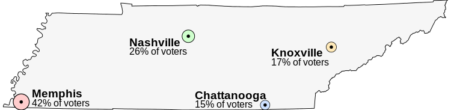

Constitution Kinotarchy
See also the glossary “Kinotarchy” for definitions of terms (where each of these terms is also defined in the constitution itself; the glossary refers to the respective constitutional article).
Kinotarchy is the name of this form of government (Greek for “rule by communities”).
Outline of the Constitution:
1. Universal Rights Dignity, Life, Education
2. Central Rights Principle of Equality, Protection of the Home, Self-Determination, Freedom of Belief, Freedom of Movement, Right to Leave, Freedom of Expression, Freedom of Assembly
3. Structure of the State Definition, Central State Responsibilities, Name, Symbols
4. Register Definition, Key Pairs, Accounts, Weightings, Official Accounts, Votes, Elections, Signature Revocation, Official-Revocation, Block Generation
5. Communities Community Membership, Constitution, Central Legislature, Legislative Bodies, Rules, Surety, Leaving, Sanctioning, Foreign Policy
6. Judiciary Definition, Budget, Rules, Court Proceedings, Election of Constitutional Judges, Departure of Constitutional Judges, Central Code of Laws, Constitutional Rulings, Overreach of Authority, Algorithm of the Ledger
7. Executive Definition, Councils
8. Responsibilities of the Central State Education System, Children, Foreign Policy, Central Police, Land Ownership, Public Transportation
1. Universal Rights
The fundamental rights are divided into two parts: universal rights (articles 1.x) and central rights (articles 2.x).
The following universal rights bind the legislature, the executive, the judiciary, and the communities as directly applicable law. They apply within the territory of the state and are binding for all citizens and legal entities of the state. Respecting and protecting these rights is the obligation of all state authority. The state promotes the application of these rights beyond its own territory.
Article 1.1 – Dignity
Human dignity is inviolable.
Article 1.2 – Life
Every person has the right to life and not to be physically harmed.
Article 1.3 – Education
Every person has the right to freely access information from publicly available sources.
Every person has the right to education.
As is customary for a constitution, this one also begins with fundamental rights. However, I have become convinced that in a state which is divided into two levels—the central state and the communities—the fundamental rights should also be structured into two levels. These two levels I call “universal rights” and “central rights”. Universal rights are those rights that apply unconditionally, always and everywhere, to all people. Therefore the articles 1.x place no conditions or limitations on these rights.
For example: In a prison, the fundamental rights of the prisoner are severely restricted. But their dignity remains inviolable, and they still have the right not to be physically harmed. They also retain the right to education, meaning the prison must, for instance, offer training programs to its inmates—which is also sensible for reintegration purposes.
Crucially, universal rights must be applied as directly enforceable law within the communities as well. Despite all the freedom we give communities, these rights apply to everyone and must never be compromised:
• Dignity: No community may degrade its members; every human being must be respected. This does not necessarily mean equal treatment! But the central state intervenes if a community treats its members with contempt for their humanity.
• Life: No community may demand that its members subject themselves to physical harm. Because that harm would be irreversible.
• Education: No community may deny its members access to education or public information (internet, books, etc.). Only in this way do members have a chance to break out of filter bubbles and, as a result, leave their community.
2. Central Rights
The following central rights bind the legislature, the executive, and the judiciary as directly applicable law. They apply within the territory of the state and are binding for all citizens and legal entities of the state.
These rights may be restricted by rules of communities for their members.
Article 2.1 – Principle of Equality
All citizens are equal before the law.
No citizen may be disadvantaged or privileged by the central state on the basis of their gender, sexuality, appearance, or ethnic or social origin.
Article 2.2 – Protection of the Home
The central state does not intrude into homes.
Searches or surveillance of a home may only be ordered by a judge or, in cases of imminent danger, by other authorities as provided for in the central laws, and only carried out in the manner prescribed therein.
Article 2.3 – Self-Determination
Every citizen has the right to pursue their own goals.
Every citizen has the right to live their life as they choose.
This right is limited where it would infringe on the fundamental rights of others. Laws may restrict this right only to the extent that they can demonstrate a necessity for doing so.
Article 2.4 – Freedom of Belief
Every person has the right to choose and profess their faith and worldview freely.
The central state may not favor any particular faith.
Article 2.5 – Freedom of Movement
Every citizen has a right to liberty.
This right is limited where it would infringe on the fundamental rights of others. Laws may restrict this right only to the extent that they can demonstrate a necessity for doing so. Communities may deny access to their community land (see Article 5.5).
Article 2.6 – Right to Leave
Every person has the right to leave the territory of the state.
Laws may restrict this right only to the extent that they can demonstrate a necessity for doing so.
Article 2.7 – Freedom of Expression
Every person has the right to express and disseminate their opinions freely.
Censorship does not take place.
This right is limited where it would infringe on the fundamental rights of others. Laws may restrict this right only to the extent that they can demonstrate a necessity for doing so.
Article 2.8 – Freedom of Assembly
All citizens have the right to assemble peacefully and unarmed at any time.
On unleased land and in the city (see Article 8.5), this right may be restricted by law, provided such laws can demonstrate a necessity for doing so.
These are all the remaining fundamental rights. Unlike universal rights, central rights come with certain limitations, which are specified within each respective fundamental right. Additionally, for all central rights, it is permissible for communities to impose restrictions on their members through their own rules. In this regard, Article 5.7 serves as an important supplement, as it always allows individuals to leave a community, even if that community restricts the right to liberty.
Most central rights apply only to citizens. Since this also holds true for the freedom of movement, it is crucial that the state guarantees that every individual may leave the national territory at any time.
Every citizen always has the option to leave their current community in order to enjoy all central rights in the form outlined here. And every citizen will consider, when choosing a new community, which restrictions of central rights are acceptable to them. This is part of the core idea of communities: to decide for oneself under which rules one wishes to live.
The central rights are not decisive for explaining the kinotarchy. However, defining them is immensely useful for the resilience of a state. They provide the judiciary with more tools to fight for the preservation of this constitution and a liberal order. They prevent overly intrusive laws of the central state from restricting the rights of all citizens. After all, citizens cannot escape the laws of the central state by switching communities.
What exactly is included in these central rights should be crafted with far greater care than I have done here. Striking the right balance—on the one hand, granting citizens as many rights as possible, while on the other hand, not overshooting the mark and overly restricting the powers of the central state—will be a constant balancing act. I therefore do not believe that this part of the constitution should be immutable.
As strange as it may sound: in case of doubt, it is better to promise too little here rather than too much. Once something is included, it is very difficult to remove. And the less this section overshoots its mark, the more seriously it will be taken.
3. Structure of the State
Article 3.1 – Definition
The state defined by this constitution is a kinotarchy.
The state consists of the central state and the communities. The central state is divided into the legislative, the executive, and the judiciary. The judiciary (interpretation of law, articles 6.x) is responsible for interpreting the laws. The executive (enforcement, articles 7.x) is responsible for executing and implementing the laws. Legislation of the central state (legislative) is enacted through votes of the communities in the central legislature and in other legislative bodies (Articles 5.3 and 5.4). Only laws passed by the central legislature are referred to as central laws.
Councils, legislative bodies, and the constitutional court are bodies of the central state.
Article 3.2 – Central State Responsibilities
If this constitution refers to a central law as necessary to carry out a state responsibility, such a law must exist. The abolition of that responsibility or its delegation to the communities is not permitted.
Article 3.3 – Name
The name of this state is ...
Article 3.4 – Symbols
Symbols of the central state such as flag, coat of arms, and anthem are defined by a central law.
The central state can be very small. However, there are certain tasks that must be fulfilled by it, as it would bring significant disadvantages if they varied from community to community. The constitution can only define the task, not its precise implementation. Therefore, it requires that a central law exists which describes how the central state fulfills this task.
Articles 3.3 and 3.4 serve to define characteristics that should be established for the central state. By referencing a central law in Article 3.4, such a central law must exist and cannot simply be revoked without replacement.
4. Register
Article 4.1 – Definition
All official publications of the central state, as well as the votes and elections defined in this document, are conducted on the ledger and automated by it. The ledger is a blockchain.
It must be ensured that this blockchain is public, decentralized, fault-tolerant, tamper-proof, historicized, and transparent in its processes. Furthermore, it must be ensured that the ledger possesses all capabilities defined in the constitution. Ensuring this is the responsibility of the judiciary (Article 6.10).
Every account on the ledger (Article 4.3) is assigned a key pair. The public key of the pair is freely accessible through the ledger.
The account owner can decrypt messages sent to them encrypted with this public key using their private key. Conversely, the account owner can sign messages with their private key, which anyone can verify using the public key. The signature includes the time at which it was made and may be bound to a ledger account or to an officially certified citizen number (see Article 4.3).
Article 4.3 – Accounts
Anyone may create accounts on the ledger. Accounts can publish data on the ledger, either as key-value pairs belonging to the account or in the form of documents. Each published document has its own document number.
Creating or modifying data may incur a small fee.
Due to historicization, deleted data remains accessible. It must be clearly visible when data was last changed.
Data may be signed by one or more other accounts; the ledger verifies the validity of the signatures (see Articles 4.2 and 4.8). Entire accounts may also be marked as trusted, forming trust networks. This marking can be revoked at any time.
The following types of accounts are marked as such by the ledger:
Citizen Accounts
Owning an account with the following lodged data identifies someone as a citizen:
• citizen number, name, date of birth
(each officially certified, see Article 4.5)
• community (signed by the community’s account)
(optional, see Articles 4.4, 5.1)
• guardianship (optional, see Article 5.1)
If multiple accounts exist with the same citizen number and all required data, only the oldest is marked as a citizen account.
Full-Citizen Accounts
A citizen account which additionally contains, officially certified, that all mandatory education has been completed, is a full-citizen account.
Citizens with such an account are called full-citizens.
Community Accounts
Accounts without a citizen number that have a community name lodged are community accounts.
Community accounts may specify council members for each council, who receive the community’s voting weight and represent them (see Article 7.2). Communities may also specify another community whose representing council members they copy for any council for which they have not specified their own representative.
Community accounts can specify how much of their voting weight, calculated according to standard weighting, they delegate to which validators.
Validators
In validators, no citizen number or community name may be lodged. They participate in the block generation of the ledger. For this, they require deposited currency and voting weight delegated from community accounts (see Article 4.10).
Citizen accounts are those accounts which can be directly assigned to individual citizens on a one-to-one basis. Therefore, each citizen can only have one (which the ledger verifies based on the citizen number), and every citizen account must belong to a citizen.
It is the responsibility of the central state to no longer officially certify data of former citizens (see Article 4.5).
Signatures for key-value pairs can be tied to a specific account or to the lodged citizen number. Since other data (such as the date of birth) is linked to the citizen number rather than the account, only this number needs to be signed anew in the event of an account change, rather than all the data.
Without a newly signed citizen number, copying the data into another account will result in the ledger recognizing the citizen number as invalid, and consequently, all data linked to it will also be deemed invalid. This prevents an account from impersonating that of another citizen.
Additional necessary details for the types of accounts (for example, that a passport photo has to be lodged) may be stipulated by law. However, this does not affect whether an account is classified by the ledger as a citizen, full-citizen, or community account, or as a validator.
Article 4.4 – Weightings
To be a member of a community, the membership has to be signed by that community and lodged in the citizen account.
A weighting is an algorithm used to calculate the voting weight of communities. It determines the voting weight a community has in a vote or election, and how much voting weight it can delegate to council members.
The voting weight of a community equals the number of its vote-weight-providing members divided by the total number of vote-weight-providing members across all communities. The voting weight may be limited by an upper bound and is given in percent. The voting weight of the null community is 0%. Anyone who, due to such an upper bound, does not contribute to the voting weight of their community is not vote-weight-providing.
Only full-citizen accounts provide voting weight to their communities. Additionally, to provide voting weight, each key of a full-citizen account that is checked for a weighting must hold the expected value, and that value must have been officially certified (see Article 4.5) and lodged for a total of at least 3 months. Any time during which an official revocation (Article 4.9) exists against the value does not count towards this duration. Citizenship and the completion of all mandatory education are checked for every weighting.
The default weighting is a weighting in which no further values are checked, but an upper bound of 29% per community applies.
Additional weightings may be defined by enacted proposals (see Article 4.6). These weightings check for further keys whether accounts have lodged certain values. Multiple groups of citizens providing voting weight may be defined, with or without overlap, which are multiplied by predetermined factors and then added together to determine the total number of vote providing members for a weighting.
All voting weights of communities and council members, as well as the accounts marked as “official”, are calculated and published by the ledger once per day, based on the data state at midnight (time zone of the capital city).
The voting weight of each community in a council or legislative body depends on the used weighting.
The default weighting is used for votes on central laws, which, after the constitution, form the core of the state. Therefore, the constitution sets an upper limit of 29% for the maximum voting weight of any single community. On the one hand, this serves to maintain a diversity of competing communities. On the other hand, it is also meant to provide protection in case a single large community transforms into a dictatorship or something similar. No matter how many members it has, this community cannot decide the fate of the central state on its own.
Since full-citizens in the null community or those exceeding the 29% threshold (under the default weighting) do not contribute to the voting weight of their community (not “vote-weight-providing”, as they do not alter the percentage), the voting weights of all communities always sum up to 100%.
Article 4.5 – Official Accounts
If at least 60% of the voting weight of the communities, calculated using the default weighting, have marked an account as trustworthy, the ledger marks that account as “official”. If fewer than 45% of the voting weight express trust in an account previously marked as “official”, the account loses that marking.
The ledger marks newly submitted signed data in an account as “officially certified” if the signing account was marked as “official” at the time the signature was created. Such data is considered officially certified.
A registration office (or something similar) will be established by the central state and equipped with financial resources. The communities express their trust in the account of this office. Once 60% have done so, the account receives the designation “official”, and the office can commence its work: it confirms citizens their citizenship, the completion of all mandatory education, and other data.
Citizens lodge these signed pieces of information in their accounts. The ledger verifies the signature and marks the data as official, ensuring that everyone can rely on the accuracy of the information.
Based on this, the ledger then designates accounts as citizen or full-citizen accounts. Thus, starting from nothing but the membership of full-citizens in communities, a state trust network and reliable data have been created.
Article 4.6 – Votes
Votes result from proposals. A proposal is considered new as long as it has not been marked as “effective” or “rejected”.
Eligible voters can submit proposals or initiatives (see Article 4.7), each marked with a specific type, to the ledger. Each body of the central state has a corresponding type. Depending on the type, eligible voters may be communities, council members, or constitutional judges.
For each voter, the number of new proposals plus initiatives they may submit is limited per type to the number of full percentage points of voting weight they hold. The ledger knows each voter’s voting weight (see Articles 4.4 and 7.2; each constitutional judge’s vote counts equally).
Other eligible voters may signal to the ledger that they support a proposal or initiative. This support can be withdrawn at any time. Each supporting voter, including the proposer, may choose to support with only part of their voting weight.
Proposals consist of a document (see Article 4.3), structured data, or both.
Structured data references other proposals by their document number. Proposals without a document cannot be referenced. For each referenced proposal, it is specified whether it should be adopted, revoked, or (only possible if the current proposal contains a document as well) whether the current proposal requires or replaces it.
Structured data may also define new councils and legislative bodies. To do so, the proposal must include a document and generate any required new weightings through structured data. If a referenced weighting comes from another proposal, that proposal is automatically required.
New proposals may be withdrawn as long as they are not part of an ongoing vote. Proposals can be marked as “to be voted on”. If a proposal marked “to be voted on” reaches a supporting voting weight of 12%, and all proposals it requires are already marked as “effective”, a vote on the proposal is automatically triggered.
The ledger publishes this information, and the vote is held on the proposal, along with any referenced proposals to be adopted, in the version at the time of the start of the vote.
During the voting period, each eligible voter may vote for or against the proposal, optionally with only part of their voting weight. Votes cannot be changed once cast.
The voting period ends after a predefined amount of time. If a proposal required by the voted on proposal loses its “effective” marking during the voting period, the voted on proposal is revoked and the vote canceled.
The voting period ends early if all voters have cast their votes or the result has already been determined based on the votes submitted (further votes are still accepted until the original end of the voting period).
If, at the end of the voting period, the required minimum support has been reached, the proposal is adopted by the ledger. Otherwise, it is revoked.
The minimum support may be lower if the proposal only aims to revoke other proposals.
• Adoption of a proposal: The proposal is marked as “effective” by the ledger. Any weightings and bodies defined in structured data are created. If the proposal’s structured data states that other proposals should be adopted, revoked, or replaced, those actions are now carried out.
• Revocation or replacement of a proposal: If a vote is ongoing regarding this proposal, it is canceled. The ledger removes the “effective” marking, and marks the proposal as “rejected”. If the proposal is replaced, dependencies of other proposals are updated accordingly. If the proposal is revoked and other proposals require it, those are also revoked. Revoking a proposal does not affect others that it adopted, revoked, or replaced.
If a weighting or body is no longer defined by an effective proposal, it is removed. In the case of a body, all proposals of its proposal type are revoked beforehand.
At this point, the vote is concluded, the proposal loses its “to be voted on” marking. Any proposal marked as “effective” is an effective proposal.
If a proposal is marked as a singleton proposal, it may not contain structured data and cannot be referenced by other proposals. A vote on a singleton proposal is called a singleton vote. Singleton proposals are used when only the latest document of a proposal type remains valid, or when the proposal represents an immediate decision rather than a lasting effect, making revocation meaningless.
Articles 4.6 and 4.7 are the most complex ones in the constitution. Of the two, 4.7 is the simpler algorithm, and I will illustrate its implications through a detailed example.
Here, however, I will only note that the algorithm leads to networks of interdependent proposals that are always in a consistent state, allows for voting on grouped proposals, and permits the definition of councils and legislative bodies.
Furthermore, this article makes it easy for the rest of the constitution to define voting procedures clearly in just one sentence, by specifying the eligible voters, weighting, voting period, and minimum support (see explanation following Article 5.3).
Article 4.7 – Elections
Elections arise from initiatives. An election determines one or more winners from all submitted alternatives (accounts, documents, or values).
Initiatives can always be withdrawn. If the supporting voting weight reaches 20%, the initiative transforms into an election, which hereby begins.
Initially, eligible voters with at least 1% voting weight may submit alternatives. The number of alternatives each eligible voter may submit can be limited. Once the submission period ends, the ledger publishes the complete list of alternatives admitted to the election.
Later, the voting period begins, during which eligible voters may cast their vote. Votes are final and submitted as a list of alternatives ordered by preference. It is permitted to list only a subset of the alternatives. The higher an alternative is ranked, the more strongly the voter prefers it.
Eligible voters with more than 2% voting weight may submit multiple (up to the number of full percentage points of their voting weight) preference orderings of alternatives and distribute their voting weight freely among them.
Once the voting period has ended, the ledger calculates the Smith set based on these votes and their respective voting weights. The Smith set is the smallest set of alternatives that would not lose a head-to-head vote against any alternative outside the set.
If the Smith set contains exactly one alternative, that alternative has won the election. Otherwise, all alternatives outside the Smith set are removed, then the alternative currently least frequently ranked as the top preference is removed, and the calculation begins again.
The identified winner is removed from the list of alternatives, and the calculation begins again to determine the next-best alternative.
The ledger publishes the top nine placements of the election.
Citizen Elections
A citizen election is an election in which the ledger restricts the submittable alternatives to full-citizen accounts.
To better understand how elections would function under the described procedure[80], let’s examine the process using a modified example from Wikipedia: the vote to determine the capital of the U.S. state of Tennessee.
This vote aims to decide which of four possible cities will become the new capital of the state. In our adaptation of the example, each city simultaneously represents a community, and we assume that all communities prefer the capital to be as close to them as possible.

The alternatives up for election are:
• Memphis, with 42% voting weight, located far from the other cities
• Nashville, with 26% voting weight, centrally located in the state
• Knoxville, with 17% voting weight
• Chattanooga, with 15% voting weight
This example is used on Wikipedia to explain various voting systems because, in a classic vote (where each voter simply marks their preferred alternative, and the alternative with the most votes wins), Memphis would win, even though it is the least preferred option for all other voters.
First, each community submits its own city as an alternative.
Then, voting takes place in the form of ranking the alternatives by preference. The communities vote as follows (preferring closer cities):
Memphis: 1. Memphis, 2. Nashville, 3. Chattanooga, 4. Knoxville
Nashville: 1. Nashville, 2. Chattanooga, 3. Knoxville, 4. Memphis
Chattanooga: 1. Chattanooga, 2. Knoxville, 3. Nashville, 4. Memphis
Knoxville: 1. Knoxville, 2. Chattanooga, 3. Nashville, 4. Memphis
From this, we generate a table of pairwise votes (“If all communities could only choose between these two options, which would win?”):
|
|
Memphis |
Nashville |
Chattanooga |
Knoxville |
|
Memphis |
x |
N(58:42) |
C(58:42) |
K(58:42) |
|
Nashville |
N(42:58) |
x |
N(32:68) |
N(32:68) |
|
Chattanooga |
C(42:58) |
N(68:32) |
x |
C(17:83) |
|
Knoxville |
K(42:58) |
N(68:32) |
C(83:17) |
x |
Cell format: <Initial of the preferred capital>(<Percentage first option (column)>:<Percentage second option (row)>)
If we now examine the columns, we can see that Nashville wins all pairwise votes: it is more popular than Memphis (58:42), more popular than Chattanooga (68:32), and more popular than Knoxville (68:32). So the Smith Set consists solely of the alternative “Nashville”, as this alternative wins all pairwise votes. Thus, we do not need to remove any alternatives or repeat the calculation. Nashville has won the election outright.
To determine the following rankings, we remove the alternative Nashville and repeat the calculation.
|
|
Memphis |
Chattanooga |
Knoxville |
|
Memphis |
x |
C(58:42) |
K(58:42) |
|
Chattanooga |
C(42:58) |
x |
C(17:83) |
|
Knoxville |
K(42:58) |
C(83:17) |
x |
Even though the alternative Nashville is no longer available, the community Nashville still participates in the vote! Therefore, the vote ratios remain unchanged; the table has simply lost one row and one column.
Looking through this reduced table, we see that Chattanooga now wins all pairwise votes. Thus, it is the next winner and secures the second place in the result list.
Now there are only two candidates left, and we simply look at the pairwise vote between Memphis and Knoxville. Knoxville wins this (58:42).
The result list is therefore:
1. Nashville
2. Chattanooga
3. Knoxville
4. Memphis
It may seem as though Memphis, despite its 42% voting weight, has achieved nothing, given that it is in last place. However, in this example, only one capital city was sought. Thanks to Memphis, the westernmost of the other three cities was chosen. Thus, Memphis did have a decisive influence on the election outcome. From the perspective of selecting alternatives, it is desirable if an extreme position (here, Memphis) does not succeed and instead a consensus position in the middle wins.
In the constitution, the election mechanism is only used for determining new constitutional judges. This is important enough, but I consider it at least equally important that a fair algorithm for elections is prepared in the ledger to select one of several alternatives. Be it a candidate for an office or a decision of the state between several competing alternatives. The fact that the algorithm is prepared in the ledger makes it easy for laws and regulations to refer to it and use it to make necessary decisions.
In the end, every possible voting method has its weaknesses, which is why there are countless proposals. Many of them are far better than the classic method with only one vote cast. The crucial thing is to settle on one of these procedures, so that in the absence of agreement we don’t end up stuck with the much worse traditional voting method. The method described here has the advantage of being very robust against tactical voting decisions—it is almost always the best approach to write down one's preference list exactly as it actually is.[80]
Moreover, the voting method is still simple enough that it could be written down in the constitution with just a few sentences.
Article 4.8 – Signature Revocation
Each account may revoke its own signatures: all of them, all within a specific time period, or individual signatures based on the fingerprint of the signed data.
A signature revocation can be withdrawn as long as it is not yet valid. A revocation becomes valid if it is not withdrawn for three months.
If a revocation has been initiated for certain data, this is indicated. Once a revocation is successfully completed, the ledger marks the affected data as no longer signed.
The marking of data as “official” is independent of the signature. Once the mark has been assigned, it is not lost through signature revocation.
Article 4.9 – Official-Revocation
Any account marked as “official” can initiate, stop, or resume the revocation of “official” markings from data. This can apply to all markings or revocations made by a given issuing account, optionally restricted to a specific time period, to individual revocations, or to individual markings identified by the fingerprint of the data.
If such a revocation is not stopped for a total of three months, it becomes valid. If it has not become valid within twelve months, it is deleted. After a successful revocation of the “official” marking, the original signature remains, but the data is no longer considered officially certified.
The term “official-revocation” refers to revocations of the “official” marking on data that are neither stopped nor yet valid.
If there is an official-revocation for officially certified data, this is always displayed. If a citizen number has an official-revocation, and there exists a newer account with the same citizen number and no official-revocation, both accounts are returned for that citizen number.
The withdrawal of one's own signatures is straightforward. It is done to correct mistakes or because one has changed their opinion on something. If permanent control over an account is lost, the other accounts withdraw their trust from it, rendering its signatures worthless.
Communities can utilize this mechanism to revoke memberships. They do this by retracting data signed by their account based on the fingerprint of that data131. As long as a citizen still displays a membership in their account data, they are considered part of that community from the ledger’s perspective, provided there is no valid revocation—even if one has been initiated (there is an official-revocation). However, other members of the community will likely assume, upon seeing that a revocation has been initiated (which is shown), that the community has indeed already excluded this person.
More challenging to resolve are the revocations of the “official” markings granted by state accounts, as these serve as the seal of validity for the central government, upon which the entire state system is built, including the voting weight of the communities.
Therefore, it is crucial to safeguard against errors in both directions: In one direction, an account must be able to revoke its own “official” markings. This is done to terminate citizenship, correct mistakes, or mitigate the effects of an account hack. If the central state permanently loses control over such an account, the damage must be repairable by other official accounts.
In the other direction, "repairs" by hacked accounts must also be preventable. This risk will inevitably arise from the revocation possibilities.
The only secure solution for this is to require instructions to accumulate time. Communities will promptly respond to an account no longer being controlled by the central state by withdrawing their trust and thus the “official” marking.
This is why citizen numbers and proof of education must accumulate three months of time without an ongoing revocation before a full-citizen account contributes to the voting weight of its community. And this is why official-revocations must accumulate three months of time before data is no longer considered officially valid in the eyes of the ledger.
Because both types of manipulation—countless new full-citizen accounts granting voting weight, as well as invalidating almost all full-citizen accounts—could, if successful, undermine the entire state system.
Hence, this very long three-month period to allow errors to be noticed, corrected, and their causes addressed before drastic consequences occur.
No matter how long we set this period: In any case, an additional data source is needed to clarify which dataset is valid during an ongoing revocation. The ledger can wait the three months; the voting weight of individual community members is not that crucial. But real life, for example if police demands to see a digital ID, cannot.
Therefore, the registry always indicates an ongoing revocation in such cases, and for citizen accounts, it shows both datasets. This makes it clear that other information must be used to decide whether the revocation is correct or not, and how long the old information remains valid despite the ongoing revocation (the default assumption will always be that the revocation is justified).132
Article 4.10 – Block Generation
The blocks of the ledger are generated by validators based on the voting weight which community accounts have delegated to them (see Article 4.3). Additionally, a validator must deposit currency in proportion to its share of the overall voting weight. The share of each validator is limited to 10%.
For each block, a seeded random function (weighted by share) determines which validator is responsible for the generation.
Validators receive currency for correct behavior, but may lose deposited currency in the event of misconduct. Whether validators have acted correctly is decided by votes from all validators.
The algorithm for block generation—and for the blockchain as a whole—is specified by the constitutional judges (see Article 6.10).
Each block is built upon its predecessor. For every block, the validators check whether it has been generated in accordance with the rules. The chain of these blocks gives the blockchain its name.
Since block generation operates on a different level than the voting behavior of communities in votes and elections, it takes place in logically separate accounts. Naturally, communities can operate their own validators, but delegating this task to other communities or independent service providers is also possible.
If less than 50% of the validators (by share) execute the algorithm of the ledger correctly, the state fails. A financial incentive for the diligent execution of this task—like existing blockchain-based digital currencies do—is therefore crucial. Additionally, it is up to the communities to carefully select the validators to which they delegate their voting weight.
5. Communities
Article 5.1 – Community Membership
The entry in the citizen account is authoritative for community membership.
Every citizen of this state belongs, in addition to the central state, to exactly one community. To ensure this, there is a null-community, to which citizens belong who are not members of any other community. The null-community takes no actions. Legal entities do not belong to any community.
Children (see Article 8.2) belong to the community of their primary guardian as long as they do not have a citizen account stating otherwise. For a differing community membership, it must be signed both by the community and by a guardian who has lodged their guardianship on the ledger.
Since young children do not yet have their own citizen account on the ledger, it does not know which community they belong to. However, this is not problematic, as children do not count towards the voting weight of their community (see Article 4.4). The central state knows, based on other documents, who has guardianship over whom and, consequently, which community the children belong to.
Resolving guardianship solely through entries signed by citizens would mean that it could be relinquished by no longer publishing the entry. Since guardianship is not only a right but also a duty, this is not an option.
Article 5.2 – Constitution
Communities are entitled to change the constitution by means of singleton votes of the type “Constitution” using standard weighting. The text of the singleton proposal is the proposed new version of the constitution. The voting period is 28 days, with a minimum approval of 70%.
The initial version of the constitution must also be confirmed through this procedure, to ensure that the latest valid singleton proposal of the “Constitution” type always contains the current constitutional text.
Article 5.3 – Central Legislature
The communities determine the central laws through votes on proposals of the type “Central legislature” with standard weighting. The voting period is 14 days, the minimum approval rate is 60%; for pure revocations, 45% is sufficient.
The central legislature is a legislative body. Effective proposals published by a legislative body are laws.
If two laws contradict each other, the older law takes precedence. After a law has been replaced, the judiciary decides which parts of the law are to be considered new under this precedence rule.
New laws or regulations that cause significant costs must either clarify the financing of those costs within the proposal itself or require an existing valid proposal that provides the necessary funding.
Central laws referenced in the constitution may be replaced but not revoked.
A small percentage of the total voting weight of the communities is sufficient to initiate a vote on a central law (one or more communities which together represent 12% of the vote-weight-providing population submit a proposal of the type “Central legislature” to the ledger).
Within 14 days, 60% of the citizens must vote in favor of the law through their communities for it to be adopted (an abstention counts as a rejection). If they wish, communities can agree with only a portion of their voting weight, for example, because they have conducted an internal vote.
A vote can also be held to repeal an existing central law. For this, 45% of the voting weight is sufficient. This ensures that only laws are passed and retained that have the clear support of the majority of the total population.
A law can declare a dependency on other laws. In this case, the law is automatically repealed if a law it depends on is repealed. That means in particular that it is revoked if its funding is no longer provided for.
A law may explicitly repeal, enact, or replace other laws. These are one-time effects and are not reversed by the repeal of the law. A law that consists solely of such one-time effects does not become a permanent law and cannot be repealed, as this would have no effect.
Communities can initiate a vote that enacts or repeals multiple laws at once. In this case, the vote is held on this combination of actions. Either all actions are adopted together or none of them are.
Those who wish can revisit Article 4.6 of this constitution to understand how it—in combination with Article 5.3—results in the properties just described.
Where the specified rules cannot be algorithmically verified (for example, the requirement that every law must clarify its funding and refer to the law that provides it), the constitutional court will ensure compliance and otherwise declare the law invalid.
The goal of these rules is to keep the central laws always clear and as manageable as possible (see also Article 6.7). The fact that we delegate much to the communities obviously helps a great deal in this regard.
I consider the current state of many countries—in which, as a citizen, it is practically impossible to fully know your own state’s laws—to be miserable.
Article 5.4 – Legislative Bodies
Legislative bodies may be defined, named, and granted rights by other legislative bodies through effective proposals. They may not receive more rights than the legislative body that created them had.
Based on the weighting and voting parameters established for the legislative body, communities can conduct votes within it via the ledger and thereby publish effective proposals. Each legislative body has its own proposal type.
If two laws conflict, the law of the superior legislative body takes precedence. If no such hierarchy exists, the older of the two laws prevails.
Article 5.5 – Rules
Communities may establish any rules for themselves and their members, provided these do not contradict the constitution, nor the laws or regulations of the central state. On community land, communities may enforce their rules with coercion against community members. Community land is land that does not belong to a city (see Article 8.5) and is leased either by the community itself or a community member.
A community may banish legal entities and members of other communities from its own community land by coercion. State authority and public state transportation may not be banished or obstructed. A central law governs the central state’s handling of such banishments. Apart from such banishments, the central state has no right to enforce community rules.
Article 5.6 – Surety
Communities may intervene during or after the arrest of their members whom they do not consider proven guilty, and convert the arrest into a bail. The community then vouches for the person's good conduct and their participation in the judicial process. The amount of bail is determined by the judiciary.
Article 5.7 – Leaving
Communities must allow their members to leave at any time. A declaration of intent to leave the community is sufficient to render its rules inapplicable to that person. Communities are obliged to ensure that members whose freedom they have restricted can verifiably make such a declaration at any time.
Article 5.8 – Sanctioning
A community may only be sanctioned or banned if the constitutional court rules it to be hostile to the constitution. The details are governed by a central law.
Article 5.9 – Foreign Policy
Communities may not conduct foreign policy (see Article 8.3).
Since everything is permitted that has not been prohibited, Article 5.5 merely restricts which rights communities cannot be deprived of by law. Other leaseholders will also be able to enforce house rules on leased land, but their right to do so is not protected by the constitution.
The possibility of converting arrests into bail gives communities the ability to defend against arbitrary arrests of their members.
The deposited bail prevents communities from exploiting this to make their members immune to laws. The judiciary will determine the bail amount based on how the community has behaved in the past. For communities that have allowed members to buy their way out of punishment (by forfeiting the bail), the bail will be absurdly high if a repetition seems likely.
Each community is free to decide what penalties its members receive for breaching community rules. The only restriction is that members must always be allowed to leave the community.
Since children cannot leave a community without the consent of their guardian (until they have completed all mandatory education and thereby aren’t children anymore), they instead always have the right to attend school (this is not limited to class hours) (see Article 8.1).
6. Judiciary
Article 6.1 – Definition
The constitutional court consists of up to nine constitutional judges. They are responsible for the structure and organization of the judiciary.
Article 6.2 – Budget
The judiciary receives its budget through a central law. The salaries of the constitutional judges are specified separately within this budget. Apart from their own salaries, the constitutional judges are free to decide how to allocate the budget.
Article 6.3 – Rules
The constitutional court may establish rules for the judiciary through votes of the type “Constitutional court”, with a minimum approval of 66% and an election period of 24 hours. The constitutional court is free to shape these rules as it sees fit, so long as they do not conflict with the constitution.
Rules established by the constitutional court may not impair the impartiality of the constitutional judges.
Article 6.4 – Court Proceedings
The judiciary is responsible for determining whether suspects have acted unlawfully. The executive is responsible for ensuring that the parties involved are present during court proceedings, as well as for enforcing the sentence in the event of a conviction. The details and implementation are governed by a central law.
Article 6.5 – Election of Constitutional Judges
Communities may initiate a citizen election for constitutional judges with default weighting if fewer than nine judges currently sit on the constitutional court and no such election is ongoing. The nomination period for candidates is 7 days. 14 days later, the vote is held with a voting period of 24 hours. The result list of the citizen election is trimmed to the number of vacancies the constitutional court had at the beginning of the election. The elected candidates are appointed as constitutional judges.
Article 6.6 – Departure of Constitutional Judges
The term of office for a constitutional judge is 12 years. Re-election is not permitted. After their term ends, constitutional judges may no longer serve in the judiciary or receive benefits from it. Constitutional judges may resign from office, or be removed by the communities through a singleton vote with default weighting, a minimum approval rate of 66%, and a voting period of 7 days.
Article 6.7 – Central Code of Laws
The central code of laws is an overview of all central laws, indicating which parts of the laws contradict the constitution or are superseded by other laws, and therefore do not apply.
It is regularly published by the constitutional judges as a singleton vote of the type “Central code of laws”. The minimum approval rate is 66%, the voting period is 24 hours.
The central code of laws may include law overviews of legislative bodies other than the central legislature, if the judiciary’s rules provide for this.
Law overviews of other legislative bodies may be published by judiciary bodies outside the ledger. The central code of laws and other law overviews published by the judiciary, in combination with the law texts published by the legislature, form the basis of jurisprudence.
Article 6.8 – Constitutional Rulings
The constitutional court publishes its rulings on the ledger, signed by the concurring constitutional judges.
Article 6.9 – Overreach of Authority
The constitutional court may determine, on its own initiative or as part of a ruling, that the executive or legislature has overstepped the rights granted to them.
Such a determination grants communities the right to resist the executive, insofar as such resistance serves to counter the overreach identified by the constitutional court.
Article 6.10 - Algorithm of the Ledger
The constitutional judges may, through a singleton vote of type “Algorithm”, publish a new version of the algorithm that the ledger should use in the future. The minimum approval required is 66%, the voting period is 24 hours. The transition to the new version may occur no earlier than 14 days after the end of the voting period.
The new version of the algorithm should fully implement all provisions of this constitutional text—at the very least, it must not introduce any new deviations. It is the responsibility of the validators to implement this new version (see Article 4.10).
The legislature provides the judiciary with its budget. The constitutional court can accept lawsuits at its own discretion, publish decisions on the ledger, and use its budget to establish a judicial hierarchy to ensure sufficient capacity for decision-making.
The influence of the communities on the judiciary, apart from the appointment of the constitutional judges, lies in the fact that they finance it and can grant it rights through legislation. The power of the judiciary is its moral authority, the right to publish judgments, the publication of the central code of laws and other legal overviews, and the specification of the algorithm of the ledger.
I hope the definition of the rights of the legislature and the judiciary clearly illustrates how these two branches of the central state mutually check each other. The most extreme measure available to the legislature is to recall constitutional judges with a 2/3 majority, if they disagree with their rulings. The sharpest tools of the judiciary are declaring laws invalid in the central code of laws if they contradict the constitution or other laws, as well as banning communities deemed unconstitutional.
Banning communities has no direct impact on the ledger.133 However, since citizens must publicly list their community in their account for the community to receive voting weight, the ledger is of no help to a banned community, so long as the executive actually enforces the ban.
The same applies at the level of the ledger’s algorithm. The constitution grants the constitutional judges the right to define the algorithm in use. But here too, they rely on their authority and that of the constitution. It is the communities—through the delegation of their voting weight to validators—who actually operate the algorithm.
7. Executive
Article 7.1 – Definition
The executive consists of councils created by legislative bodies, as well as all institutions established to implement laws and regulations. The executive has exactly the rights and the budget granted to it by legislative bodies. No part of the executive may receive more rights than the body that created it possessed.
Article 7.2 – Councils
Councils are composed of council members—full citizens who possess a voting weight in that council known to the ledger. Councils can hold votes and thereby issue regulations. Each council has its own proposal type. Councils may not create legislative bodies in their proposals.
Councils can be defined in applicable laws or regulations. These establish their name, which weighting they use, the minimum voting weight of each council member, the maximum voting weight per council member per community, and the parameters with which the council conducts votes.
Community accounts specify which full citizens should receive the community’s voting weight in which council (see Article 4.3).
Each council member has a voting weight equal to the sum of the assigned voting weight from all community accounts that designate them as one of their representatives. There is a limit to how much voting weight each council member can receive from any one community.
The voting weight is distributed evenly among all full citizens named by a community, while respecting the minimum voting weight of each council member (if necessary, the algorithm limits the number of voting weight recipients).
8. Responsibilities of the Central State
Article 8.1 – Education System
The central state is responsible for the education system.
All kindergartens and schools are state-run and may not be located on community land (see Article 5.5). Attendance is obligatory for children until they have completed all mandatory education. Compulsory schooling may end later, provided that this does not result in significant disadvantages for the student. It may not continue beyond reaching the age of 18.
Children subject to compulsory schooling may remain on the premises of their school at any time, may not be forcibly removed from these premises by anyone, and are provided by the state with all necessary provisions while on these premises.
Children create their account on the ledger at school, once they know how to use it and how to keep access secure.
The details and implementation are governed by a central law.
Article 8.2 – Children
Children are persons who have neither reached the age of 18 nor completed all mandatory education.
Children are under the special protection of the central state. Every child must have at least one legal guardian. At the child’s birth, this is the mother and any additional persons she designates. One guardian is designated as the primary guardian, on whom the child’s community membership depends (see Article 5.1). If the mother did not carry the child to term herself, guardianship is governed by a central law.
Guardianship may only be changed with the consent of all current and new guardians, or by judicial order.
Article 8.3 – Foreign Policy
The central state is responsible for the foreign policy (see Article 5.9). The military is maintained by the central state. Implementation and details are governed by a central law.
Article 8.4 – Central Police
The central state maintains a central police force. It is responsible for enforcing central laws. Implementation and details are governed by a central law.
Article 8.5 – Land Ownership
The state territory is owned by the state. Land is only leased out by the state. When land is leased, it must be known whether it belongs to a city. Leasing is governed by a central law.
Article 8.6 – Public Transportation
The central state maintains a public transportation network that all citizens can use without preconditions. Citizens must thereby be able to reach all parts of the country from which they are not banned (see Article 5.5). Implementation and details are governed by a central law.
Articles 8.x of the constitution define the tasks that the central state must fulfill. Therefore, each article refers to a central law that governs the implementation of the task (see Article 3.2).
There is a central police force. Even on community land it always has access. Only for residences does the constitution require search warrants (Article 2.2). The central police only pursues offenses that violate laws of the central state. Whether someone violates the rules of their community is of no concern to the central police.
Since state public transportation must not be banned or hindered on community land (see Article 5.5), citizens can use it to traverse areas where they are banned (they are just not allowed to leave the bus there). State public transportation must not require tickets (that would be a precondition). A tax or mandatory levy for financing is possible.
Even though I assume that the futurity of land leasing from Chapter 9.5 will be fully adopted, including the five land types (C, A, U, I, N), the constitution only needs land type C (City): only there does the constitution not enshrine the right of communities to enforce their rules with their own police on land leased by them (Article 5.5).
With this, we have reached the end of the constitution. Every constitution is the operating system of its state—which is why I have put so much effort into formulating it as well as possible. And for precisely this reason, many others should thoroughly test it for weaknesses and further improve its wording before and if it is actually put into use.
Transformation of a State
How could such a Kinotarchy emerge from an existing state? Even if everyone desires it, how can a state replace itself with an entirely different state construct?
I believe I see a feasible path towards this goal and would like to outline it here in broad strokes (intentionally kept general for an arbitrary democracy as the starting state).
The first step that must obviously occur is the creation of the ledger in the form of a blockchain and the development of the associated software. This should be done in an open-source manner so that many eyes can scrutinize it for mistakes. The ledger should be used to do public trial runs with shortened timelines to experiment with the mechanisms. A prize could be incorporated, transferable trough a central law, for anyone who finds a way to exploit the system. This mirrors the way we have gained trust in existing digital currencies: if there is a loophole, someone will exploit it, since there is a lot of money to gain.
This software can already be developed before any implementation in a state is planned, as it is not tailored to any specific state. This allows for the creation of the best possible common foundation for all such state experiments.
It should go without saying that the transformation of an existing state would require a constitutional majority in the parliaments, possibly even a referendum—depending on the legal pathway for altering the state's structure. With a sufficiently large majority, there always is such a way. The great trick will be to find a path that keeps the state functional and secure at all times. Here, I describe what such a path might look like.
First, the constitution of the Kinotarchy must be slightly adjusted to enable the transition from an existing state. The former state becomes a community, but one with special rights. It is called “founding community”, may hold more than 29% of the voting weight, but must always vote proportionally as its parliament has voted. If the founding community ever falls below 29% voting weight, it transforms into a normal community.
The founding community has time-limited special rights for the transition phase: until that phase ends, the founding community holds all the rights of a community and all the rights of the central state. Its police thus have the same rights as the central police, its laws apply in addition to the central laws, members of other communities can be convicted by its courts, everyone must attend its schools, and so on.
Now, the prerequisites named by the new constitution must be established. First, there is the question of land ownership (Chapter 9.5). It is relatively easy to declare all land as leased to the current owners (this is initially nothing more than a renaming). More challenging is determining which land belongs to which type. And how privately owned land of a non-leasable type (N – natural, I – infrastructure) returns to state ownership.
The transition from the current taxation of land to a lease fee dependent on economic utility is a topic that can be addressed separately and later. It is not necessary for the functioning of the central state, although it makes it more dynamic, improves its revenue, and enhances the functionality of the communities.
As long as the lease fee is insufficient to balance supply and demand for land of type U (undeveloped), the re-leasing of type U as type A (attached) without the consent of the current leaseholder will not be enabled by the state.
Additionally, an initial version of all laws required by the constitution must be drafted: symbols of the central state (Article 3.4), handling of banishments (5.5), ban of communities (5.8), budget of the judiciary (6.2), interfacing of executive and judiciary (6.4), education system (8.1), guardianship in special cases (8.2), military, central police, leasing, public transportation.
These laws need not be perfect, as there is no central state yet. Here, placeholders of the form “if nothing else has been decided by the end of the transition phase, then ...” are sufficient. This ensures that the central state is always internally coherent and that its current mode of operation is never in doubt.
After the new constitution has been adapted for the transition from an existing state, the first draft of every necessary central law has been written, and the ledger has been activated, citizens receive accounts on the ledger. These accounts automatically contain the necessary data to become voting members of the founding community. This is essential for decisions on the ledger to function correctly.
Now, the originating state can conduct the necessary votes to validate the new constitution and these initial central laws. Through this process, it transforms into the founding community of the new central state.
The founding community, the former state, retains full control over the entire state territory during the transition phase. Other communities may form, but they have no influence over the founding community. Its laws continue to apply to all citizens during this transition phase, regardless of which community somebody belongs to.
However, other communities already have political rights at the central state level: All decisions at this level are dominated by the founding community, but when the founding community’s parliament makes a close decision, smaller communities can tip the scales.
Voting example: 90% of citizens still belong to the founding community. The founding community wants to pass a central law, and its parliament has approved the law with 63% support. However, of the other small communities, which collectively hold 10% of the voting weight, 8% vote against the law and only 2% in favor. The vote at the central state level (Article 5.3) thus has an approval rate of 0.63 × 0.90 + 0.02 = 58.7%. This is less than 60%, so the central law does not come into effect.
The founding community can and must use this transition period to build the central state: Pass additional central laws, along with their dependencies and funding. Appoint constitutional judges and equip them with a budget to shape the judiciary of the central state. Establish a central police force to enforce the laws of the central state. Transfer the education system and the military to the central state.
The founding community loses nothing through this transfer: Resources are merely molded into forms prescribed by the new constitution. Since almost all citizens still belong to the founding community, it continues to control these resources at the central state level.
This transfer must occur to ensure that institutions such as the police, laws, and schools continue to function everywhere and for everyone after the transition period ends, rather than only for members of the founding community and only on community land. The latter is crucial: Central state laws and a central police force are needed to ensure that, after the end of the transition period, cities, unleased land, and land leased by companies do not suddenly become lawless zones!
Once the transition period is over, the laws of the founding community are no longer laws – they are rules, as they only apply to members of the founding community. The other communities gain control over their own land, limited only by the laws and police of the central state, and this new form of state organization comes to life.
From this point on, citizens have real freedom to choose under which rules they wish to live. From now on, competition among communities for members will ensure that increasingly better alternatives are offered to citizens. Communities will experiment with various types of societal systems to provide their members with the most efficient, fairest, and most pleasant options.
And if the transition phase was properly designed—and, one hopes, thoroughly examined for weaknesses beforehand—then the state was never incapacitated or especially vulnerable at any point during the transformation.